WHAT IS IT
ガラスは、窓の外の鏡
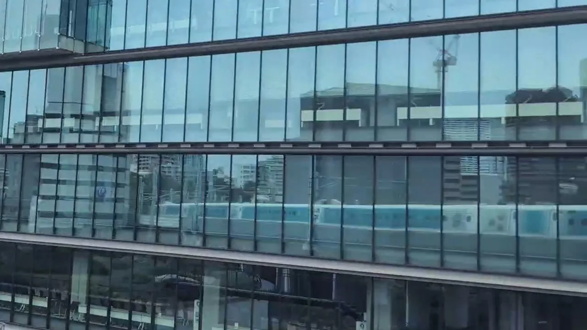
写真のガラスの下のほう、横一列に並ぶ青い車体が、撮った人の乗っている列車です。鉄道ファンのあいだで「反射鉄」と呼ばれる楽しみ方で、線路のすぐそばにガラスの多い建物があると、こうして映ることがあります。乗りながら、自分の乗っている列車を撮れる。乗り鉄と撮り鉄を一度に楽しめるのも、反射鉄のおもしろさだと思っています。東海道で実際に映った場所を、見る側の窓と一緒に紹介します。
補足：このページの昼の写真に映っているのは、どれもディズニー塗装の「Sparkling Dreams Shinkansen」です。
TWO KINDS
映る場所は、2種類
駅の近くのビル
有楽町・東京〜品川・品川の先・新横浜・名古屋・京都
発車と到着の前後で、速度が60〜70km/hほどに落ちている区間です（新横浜は加速中で約160km/h）。線路際にガラスの多い建物が並び、品川の先では約13秒のあいだに2棟続けて映りました。
工場・事業所
ポーラ袋井工場・フジテック
線路と平行に長いガラス面があり、手前が開けている建物です。150〜250km/hで走っていても、ガラスの端から端まで列車が一直線に映ります。一瞬なので、場所を先に知っておくのがコツです。
QUICK LIST
乗りながら見る、早見表
撮影した向きの見どきです。時刻は各駅に停まるこだまで測った目安です。
| 場所 | 席 | 見どき |
|---|---|---|
| 01 有楽町マルイ | A席側 | 新大阪行き：東京を出て約1分 |
| 02 東京〜品川（夜） | E席側 | 東京行き：品川〜東京のあいだ |
| 03 品川の先 | A席側 | 新大阪行き：品川を出て約1分 |
| 04 新横浜の先 | A席側 | 新大阪行き：新横浜を出て約1分 |
| 05 ポーラ袋井工場 | A席側 | 新大阪行き：掛川を出て約2分半 |
| 06 名古屋駅の前後 | A席側 | 新大阪行き：名古屋に着く直前と、出てすぐ |
| 07 フジテック | E席側 | 東京行き：米原に着く約2分前 |
| 08 京都コンピュータ学院 | E席側 | 東京行き：京都に着く直前 |
TOKYO → SHIN-OSAKA
東京から新大阪、沿線の鏡
新大阪行きの順に並べました。東京行きでは順番が逆でも、A席・E席の側は同じです。
有楽町マルイ
発車してすぐ、最初の鏡
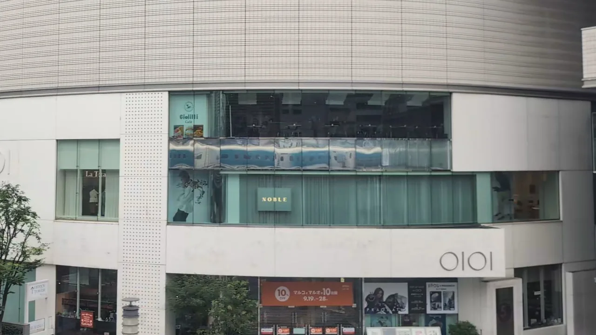
東京駅を出て約1分、有楽町を過ぎるあたりのA席側。有楽町マルイの、カフェが入る階の横長のガラスに、通り過ぎる列車がそのまま映ります。まだ速度が低く、最初に試しやすい1か所です。
新大阪行きで撮影：東京を出て約1分
東京〜品川のE席側
夜は、窓の明かりがつづけて映る
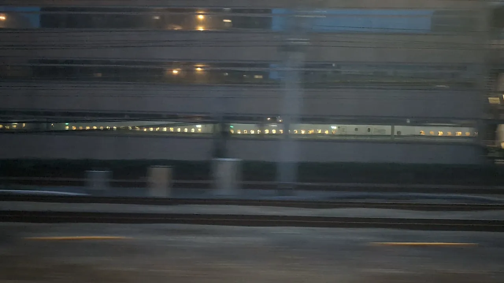
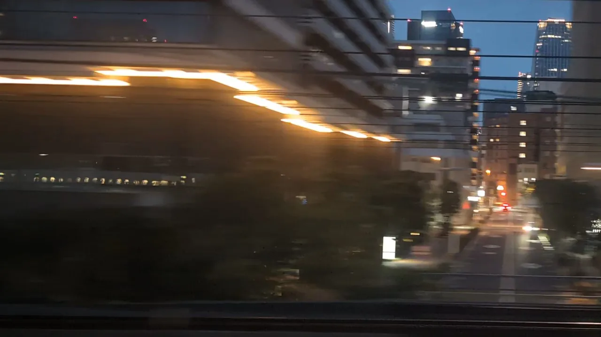
東京と品川のあいだのE席側は、線路際にガラスの多いビルが続き、列車が映る場所がいくつも連続します。夜は、車内の明かりが点の列になってガラスの中を流れていきます。写真はそのごく一部で、ふだんの車体の新幹線です。
東京行きで撮影：品川を出て、東京に着くまでのあいだ
第一三共 品川研究開発センターと大崎ガーデンタワー
動き出してすぐ、2棟つづけて
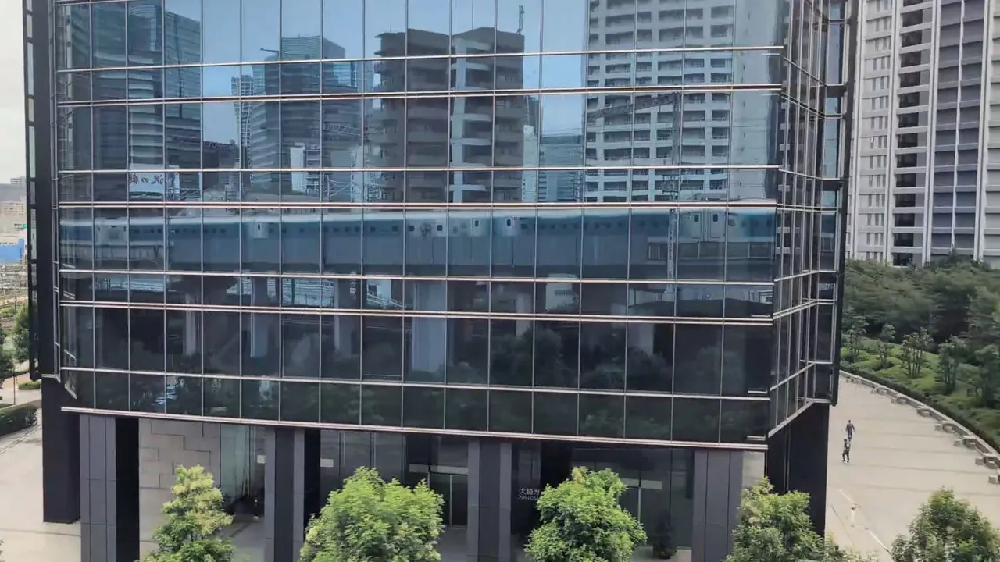
品川を出て約1分、A席側。まず第一三共の品川研究開発センター、約13秒後に大崎ガーデンタワーと、ガラス張りのビルが続きます。どちらも低い階のガラスに、列車が横一列に映ります。
新大阪行きで撮影：品川を出て約1分
新横浜の先の低いビル
加速のさなか、横長の窓に
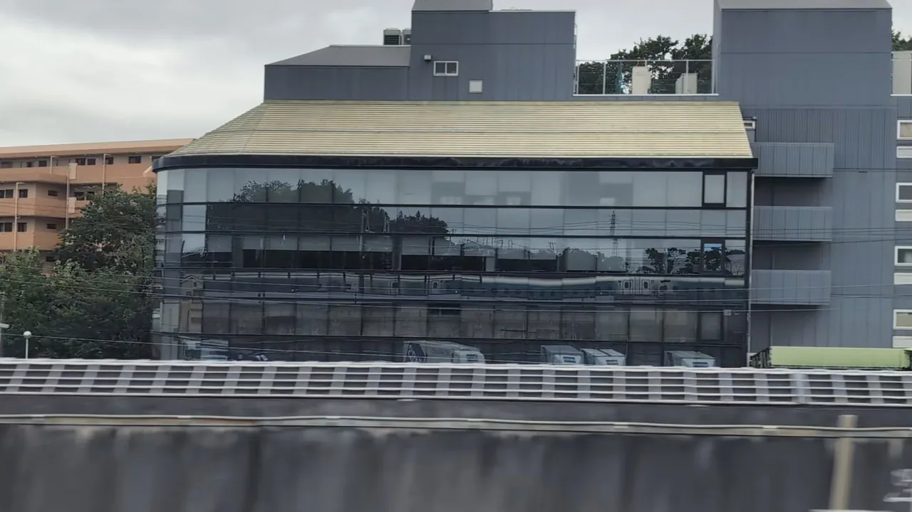
新横浜を出て1分ほど、駅から約1.6km先のA席側。線路脇に横長の窓が段になって並ぶ建物があり、下の段のガラスに車体が流れます。加速している途中なので、映るのは数秒です。建物の名前は確認中です。
新大阪行きで撮影：新横浜を出て約1分
ポーラ化成工業 袋井工場
長いガラスに、端から端まで
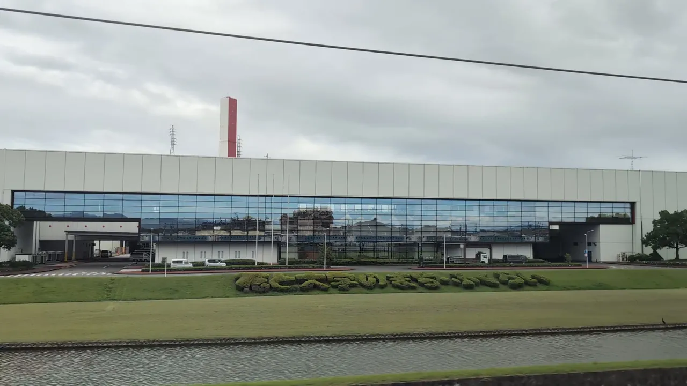
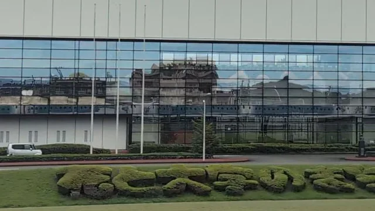
掛川を過ぎて袋井のあたり、A席側に白く横長の工場が現れます。手前は芝生と植え込み。その奥のガラスの下のほうに、列車が端から端まで一直線に映ります。約250km/hで通るので一瞬です。
新大阪行きでは約10秒後に、同じA席側で大塚製薬の工場（POCARI SWEATの文字）が続きます。東京行きなら、大塚製薬の工場を過ぎて約10秒後です。
新大阪行きで撮影：掛川を出て約2分半
名古屋駅の前後
着く直前と、出てすぐ
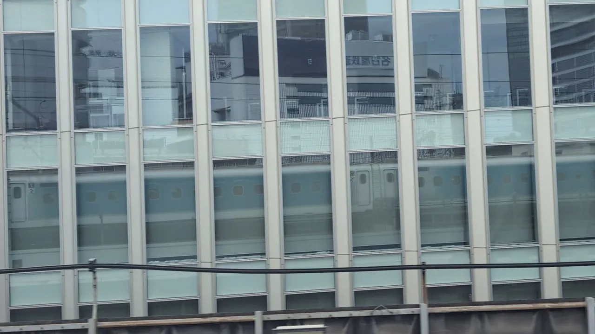
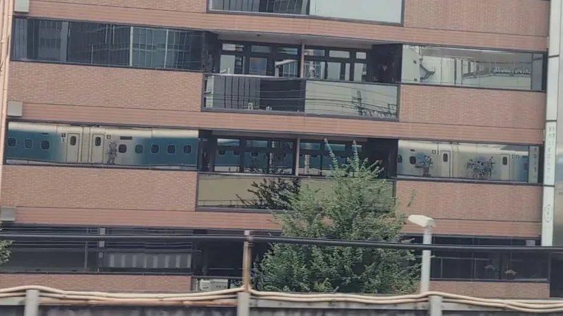
名古屋駅の前後は、A席側の線路際にガラスの多い建物が並びます。着く直前は、縦長の窓が並ぶビルに、減速しながら入っていく列車が映ります。ガラスの上のほうには、線路の反対側にある「名古屋鉄道」の文字も裏返しで映っています。出てすぐは、線路際の建物のガラスに車体の絵柄までくっきり映りました。
新大阪行きで撮影：名古屋に着く直前と、出てすぐ
フジテック Big Wing
研究塔のとなり、長いガラス
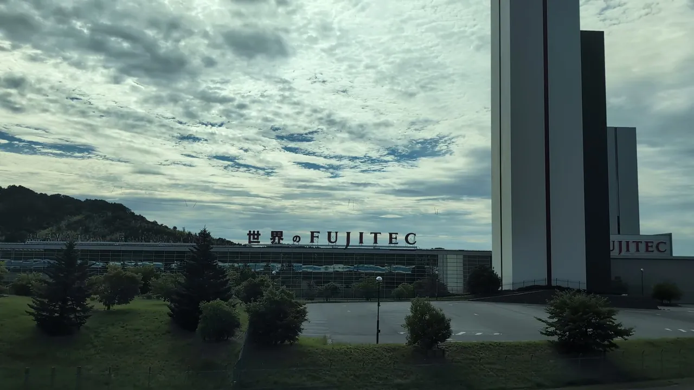
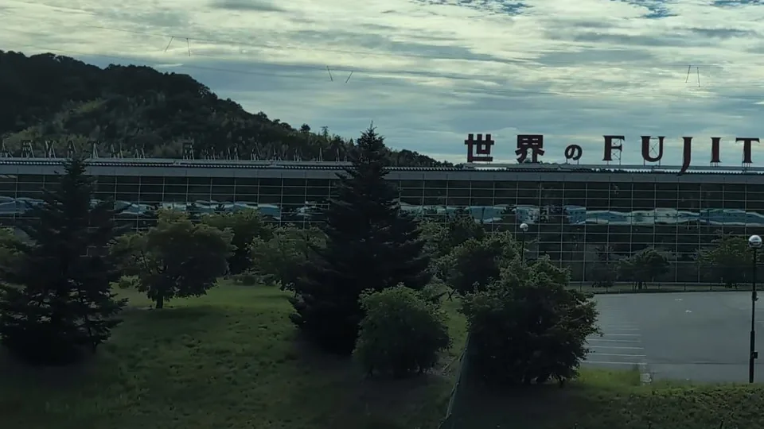
高さ170mのエレベータ研究塔で知られる、フジテックのBig Wing（滋賀県彦根市）。研究塔の京都寄りにある、「世界のFUJITEC」の文字を掲げた建物の長いガラスに、青い車体が横一列に映ります。新大阪行きは研究塔の横を過ぎた直後、東京行きは研究塔の横に来る少し前が目安です。
東京行きで撮影：米原に着く約2分前
京都コンピュータ学院 京都駅前校
アーチの窓に、青い車体
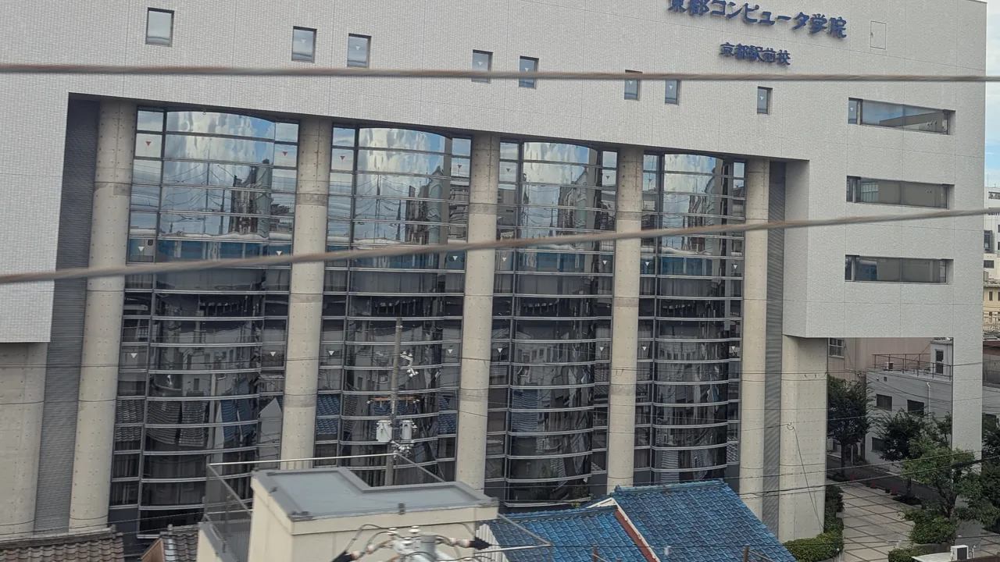
京都駅の西、E席側。「京都コンピュータ学院」の文字が入った白い校舎の、縦長のアーチ窓の上のほうに列車が映ります。反対のA席側に東寺の五重塔が見えるのと、ほぼ同じあたりです。
東京行きで撮影：京都に着く直前
HOW TO
撮るなら
- 動画で撮るのがおすすめです。ガラスの中を新幹線が走っていく様子は、写真より動画のほうが楽しめます。気に入った瞬間は、あとから止めて写真にもできます。このページの写真の多くも、動画から切り出したものです。
- レンズを窓に近づけて、車内の映り込みを減らす。
- 晴れの日でなくても映ります。ここに載せた写真は、どれも雲の多い日に撮ったものです。
- 撮るのは自分の席から。通路やデッキをふさがず、映った建物の中の人や部屋は写し込まないようにしましょう。